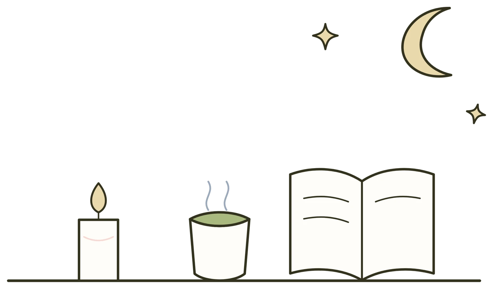
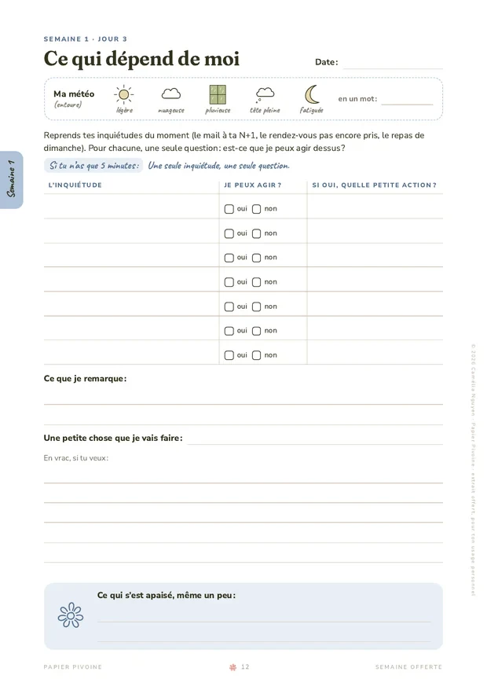

La réponse courte
Pour arrêter de ruminer le soir, chasser la pensée marche rarement, parce que plus on essaie de ne pas y penser, plus elle revient. Ce que j’essaie plutôt, c’est de la poser sur une page et de la trier avec une seule question : est-ce que je peux agir dessus ? Si oui, je note une petite chose à faire demain, et si non, elle reste sur la page pour ce soir.
Le soir, chez moi, ça peut être un mail envoyé trop vite, ce que j’ai dit en réunion, la journée de demain, ou une petite phrase qui me suit plusieurs jours. Et parfois tout ça à la fois. J’en ai un peu marre de m’inquiéter pour chaque petite chose.
Voici ce que j’ai compris en lisant James Pennebaker et Joshua Smyth, et une page que tu peux essayer ce soir, sur n’importe quelle feuille.
Pendant la journée, il y a toujours quelque chose à faire, un mail, une réunion, les courses en rentrant. Le soir, tout se calme, et c’est souvent là que la tête ressort ce qu’elle avait mis de côté. Quand on ressent tout et qu’on remarque chaque détail, une journée en laisse beaucoup derrière elle.

Certains soirs j’écris une page, d’autres je tourne dans mon lit, ou je mets un K-drama pour penser à autre chose. Ça dépend. Et tu as le droit de ne pas y penser ce soir, avec une série ou un livre. C’est quand la même chose revient soir après soir qu’une page peut t’aider à la regarder autrement.
Dans Écrire pour se soigner, James Pennebaker et Joshua Smyth racontent une recherche du psychologue Dan Wegner. Il demandait à des gens de ne pas penser à un ours blanc, et l’ours revenait sans arrêt. Plus on repousse une pensée, plus elle revient, et le simple fait de vérifier si elle est partie la fait revenir.
Une minute, juste pour voir
Pendant une minute, ne pense surtout pas à un ours blanc.
(Bao, lui, n’y pense pas du tout.)
Le soir, c’est pareil avec le mail ou la réunion de demain, et se dire « arrête d’y penser » marche rarement. Les auteurs conseillent plutôt d’accepter la pensée et d’écrire quelques lignes sur elle, en nommant ce qu’on ressent, au lieu de la refuser.
Écrire ne règle pas tout : parfois ça m’aide, parfois ça continue de tourner. Ce que je garde surtout de ce livre, c’est d’écrire pour comprendre et pas seulement pour vider son sac (j’en parle aussi dans L’écriture thérapeutique, c’est quoi ?).
Pennebaker et Smyth racontent une autre recherche, de Joshua Smyth. Des étudiants racontaient un moment difficile comme une petite histoire, avec un début, un milieu et une fin, et l’écriture leur apportait quelque chose. Ceux qui mettaient les mêmes émotions en liste n’en tiraient pas plus que ceux qui écrivaient sur un sujet neutre.
Alors pour la chose qui tourne vraiment, tu peux essayer de la raconter : ce qui s’est passé avant, pendant, et après. La première fois, ça part un peu dans tous les sens, et c’est normal, parce que d’après les auteurs l’histoire raccourcit et s’ordonne un peu à chaque fois qu’on la raconte.
Ils parlent aussi des travaux d’Ethan Kross et d’Ozlem Ayduk : regarder sa situation comme quelqu’un d’autre la verrait donne un peu de recul. Tu peux te demander, par exemple, ce que tu dirais à une amie qui te raconterait la même chose.
Dans ma semaine d’écriture offerte, le jour 3 s’appelle « Ce qui dépend de moi ». C’est une page toute simple pour trier ce qui tourne, et tu peux la faire ce soir sur n’importe quelle feuille.
À essayer ce soir
5 minCe qui dépend de moi
Si tu n’as que cinq minutes : une seule inquiétude, une seule question.

Une page ne remplace ni une amie ni un professionnel, et Pennebaker et Smyth le disent aussi : se confier à des amis qui te soutiennent, c’est encore mieux, et l’écriture aide surtout quand quelque chose est difficile à dire à quelqu’un.
Si tu as envie de me raconter comment ça s’est passé pour toi, tu peux m’écrire ici. Ça me fait toujours plaisir de te lire.